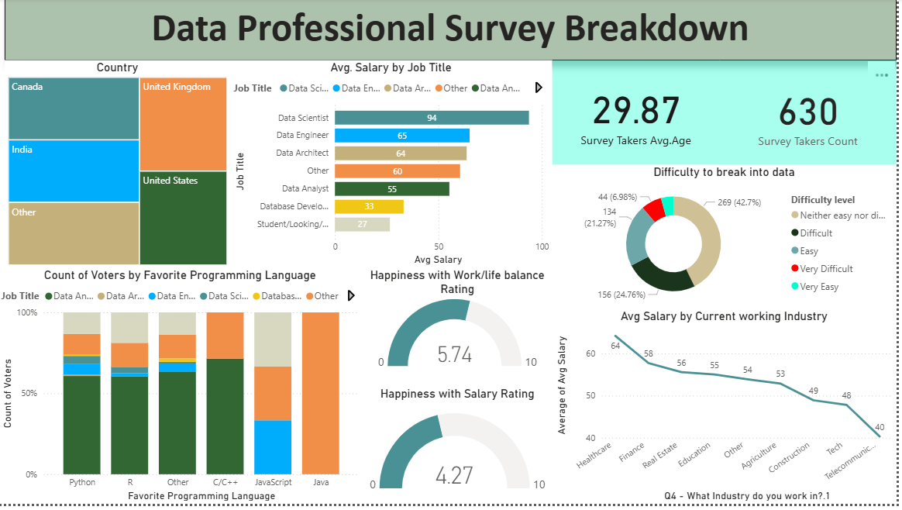
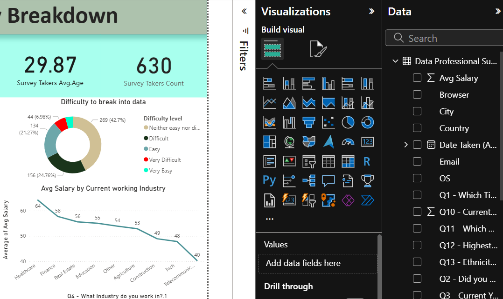
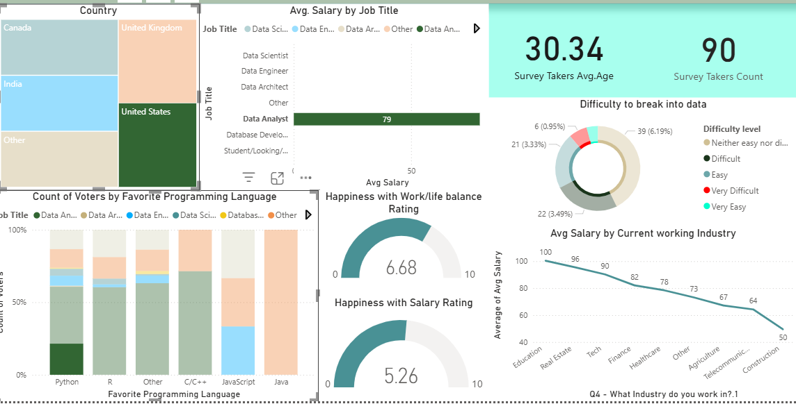

Power BI Projects
Survey Data Dashboard
Project Overview
This Power BI dashboard analyzes global data professionals across job titles, industries, salary expectations, work-life balance, and tool usage, providing insights into the data career landscape.
Code
View Project PDF → View Full Case Study →Dashboard Snapshot
Key Insights
Why This Matters
Companies use this dashboard to understand the shifting trends in the data job market, plan hiring, identify skill gaps, and benchmark compensation expectations.
SN Corporation Dashboard
Project Overview
A comprehensive Power BI dashboard analyzing sales revenue, order volume, region-level performance, and customer behavior for SN Corporation.
Code
View Project PDF →Why This Matters
Enables leadership teams to track performance KPIs, monitor trends, and make data-driven decisions across departments and regions.